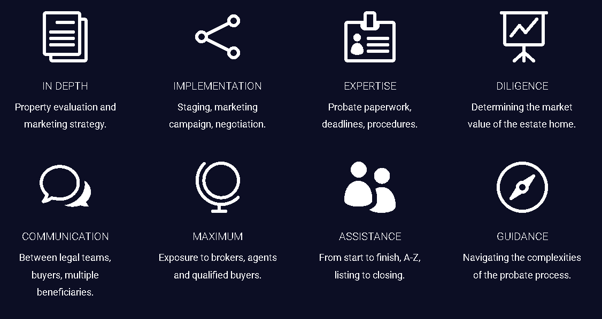

Let Us Guide You Through This Difficult Time
Be advised that no one should ever tell you that being an executor or personal representative can truly be stress-free because decisions will indeed have to be made. As an experienced Real Estate Professional, we will make sure that you are always well-informed in regard to these decisions – especially as they pertain to real estate. We will also help you with some of the difficult conversations you may have to have with family members and other heirs. If you haven’t yet secured the services of a competent probate attorney, we can help you choose one whose good work we know and are comfortable recommending.
We’ll help you at every step along the way and do everything possible to steer you clear of the minefields. Of course, you’ll still have to make some interesting choices, but having us as an advisor by your side makes the task significantly less lonely.
How We HelpDo you need to dispose of the property as quickly as possible?
Here’s where we really shine. First, we will help you determine specifically what the most critical objective or objectives are regarding the real estate that’s involved in the probate. If so, we can provide immediate cash buyers from our list of qualified investors. Often, this is vital to allow a surviving spouse to move into a more suitable location, handle medical or other bills or simply get asset funds into the hands of the heirs quickly. Our investors can often make offers within 24 hours on almost any property and can close really quickly. Sometimes, funds can even be advanced prior to closing. Of course, timelines are frequently subject to the courts and filing timelines which are beyond our control, but our efforts minimize these delays whenever possible.
Do you need to maximize the selling price to provide the greatest cash benefit to the heirs/stakeholders?
When maximum revenue is the focus, we’ll make certain the property is not only listed properly but marketed aggressively and intelligently to assure maximum exposure. We’ll make sure you know exactly what the property is worth if you are willing to wait for the right buyer and we’ll help you determine any possible repairs (if any) that might add more to the final selling price than their cost – in other words, the greatest bang for the buck. Be aware that all too often, ill-informed sellers spend far too much on repairs that do not even cover their cost in the final sale price. This is where our experience, preparation, and savvy marketing skills come into play.
Contact UsWhat If You Are The Attorney?
We work especially well in these situations. Typically the attorney of record has one of two roles. They are either appointed to the task by the court or selected by the family or executor / personal advisor. If you’ve been court-appointed, then your role is usually focused strictly on the legal issues regarding any transactions and dispersal of assets. However, if you are retained by the family or the executor / personal representative, your role usually extends to include a more advisory capacity as well. In either case, we will at all times keep you well-informed about any aspect of the process in which we are involved – especially when it comes to fielding offers on the real estate.
In some cases, the family or executor / personal advisor will want ALL aspects of the probate to be handled completely by the attorney. In these cases, we’ll work with you as “the client” regarding the real estate, just as we would with the executor / personal advisor.
We have focused our efforts on working in this unique area of Real Estate because we feel it allows us to not only perform a much-needed service to people in times of great stress but also because it is a place where we can differentiate our level of expertise from others who are not as focused in this niche. We’ve taken the time to and made the investment to properly prepare to assist you. If you’d like some general information, please review our list of Frequently Asked Probate Questions. We are ready to start working with you today and ease any unnecessary burdens quickly. We’re ready to help you immediately!
Thanks again for visiting with us online!
Work With The BestHow I Can Help You In The Probate Process

Hi, My name is Attila. I’m a dad of three, a licensed realtor, and a real estate investor with years of hands-on experience in construction and various real estate ventures. But beyond all the titles, what truly drives me is the opportunity to help people through what can often be a confusing or overwhelming process, like probate.
If you’ve landed here, chances are you’re looking for guidance on how the probate process works. I’ve packed this site with useful information to help make things clearer for you. So feel free to explore it at your own pace—you might just find the answers you’re looking for.
Every family’s situation is unique, and I understand that this can be a sensitive time. That’s why I’m here to listen, understand your specific needs, and help you put together a plan that works for you—step by step, just like assembling a puzzle. My goal is to make this as smooth as possible while helping you and your family get top value for your inherited property.
While my focus is on real estate, I also work closely with other professionals who can offer expert guidance when needed. You’ll have a team on your side, helping you through each step with care and attention to detail.
The process of selling your loved one's home is likely going to be emotionally challenging, from the sorting of the personal belongings to the finalization of the sale at the closing table. By surrounding yourself with professionals who are empathetic and helpful, this process can be easier. Other than an attorney, your greatest resources are real estate professionals who understand the intricacies of probate property sales.
Everyone needs time to deal with the passing of a loved one. When it's time to liquidate the real estate in the estate, you need to take the appropriate steps to learn the market, educate yourself and find an empathetic REALTOR® who can save you time, money and headaches during the transaction. My team is ready to help in every phase of the transaction and get the terms you and your family want and need.
By working with professionals who understand and specialize in working with families who are in probate, you can have a team on your side, helping you through each step with care and attention to detail.
From Clean Out To Closing
Unfortunately, many estates pass on far from detailed maintenance, often because the last homeowner was unable, or simply could not, maintain the property. For this reason, we can often enhance the 'curb appeal' of a property by managing the property fix-up, cleaning the inside, selling contents of the property, and making any desirable home improvements or needed repairs that will provide a reasonable return for the estate, as agreed to in advance.

Our Team Can Also Facilitate The Sale Of Personal Possessions
Often the process of planning and executing an estate sale of personal possessions is more challenging than the sale of the home. Disposing of these items can be a sensitive and emotional process. Our team's years of experience can help you navigate these sensitive issues. Our team has the resources to help you conduct a successful estate sale or refer you to an appraiser and/or estate sale professional who has the background to help you get 'top dollar' for the belongings up for sale.
You should also bear in mind that we can also realize significant savings to the estate by donating unwanted items to a local non-profit of your choosing, and we are also prepared to handle any analysis of valuables that may have value of which the family and/or heirs may not have been aware.
The Probate Process, Simplified
This is a checklist of some of the most common steps required when working though a probate case. While you should always consult an attorney to verify local and state laws and proceedings, this guide is an incredible resource to keep on hand.
As you can see – it can be quite complex. Many of these items are tasks that I can assist you with and take off your plate, and would be happy to do so!
In the meantime – download my checklist and keep with your probate paperwork.
Step-by-step Probate Checklist

Download Checklist
Thanks for visiting us online. If you are an attorney who has experience working with probate issues, we’d certainly like to get to know you better. Because of our focus on this segment of the market, we frequently need to make referrals to attorneys and other specialists to provide assistance and guidance to our clients in many areas. If you would like to be considered for referrals, please complete the information below and we’ll contact you promptly to discuss your qualifications and experience.
IMPORTANT: If you or a client of yours has a property that is in probate and would like a no-cost, no-obligation market evaluation done to determine its approximate selling price, please CLICK HERE and we’ll get right to work on compiling that data and get back to you with the results.
Glossary & Frequently Asked Questions
Glossary of Important Probate Terminology
The legal process by which a deceased person's last written directives are certified and their estate is administered.
A specialized court dealing with the administration of estates, validating wills, and ensuring proper distribution of assets.
Also known as an Executor or Executrix, this is the person designated by a will to manage the deceased's estate.
A type of ownership where property passes directly to surviving owners, bypassing probate.
Refers to a person who has died and left a valid "Last Will and Testament."
Refers to a person who has died without leaving a "Last Will and Testament."
A document that modifies or adds new provisions to an existing will.
Probate Definitions And General Information
An original will is delivered to court, a notice is published, a representative is certified, creditors file claims, assets are gathered, and finally, remaining assets are distributed.
Generally six months, but can take much longer due to delays.
To legally transfer property titles, collect taxes, set deadlines for creditor claims, and ensure orderly distribution of the estate.
Not necessarily. Assets in joint tenancy or a living trust often pass to heirs without probate.
It can cost 3% to 7% or more of the total estate value.
Definition and Duties of the Personal Representative
Duties include: inventorying assets, receiving payments due, paying debts, filing taxes, and distributing property.
No, you can decline. An alternate or a court appointee will take over.
The representative is personally liable for any damages caused by neglecting their duties.
This begins a "Will contest," which can be costly and cause long delays.